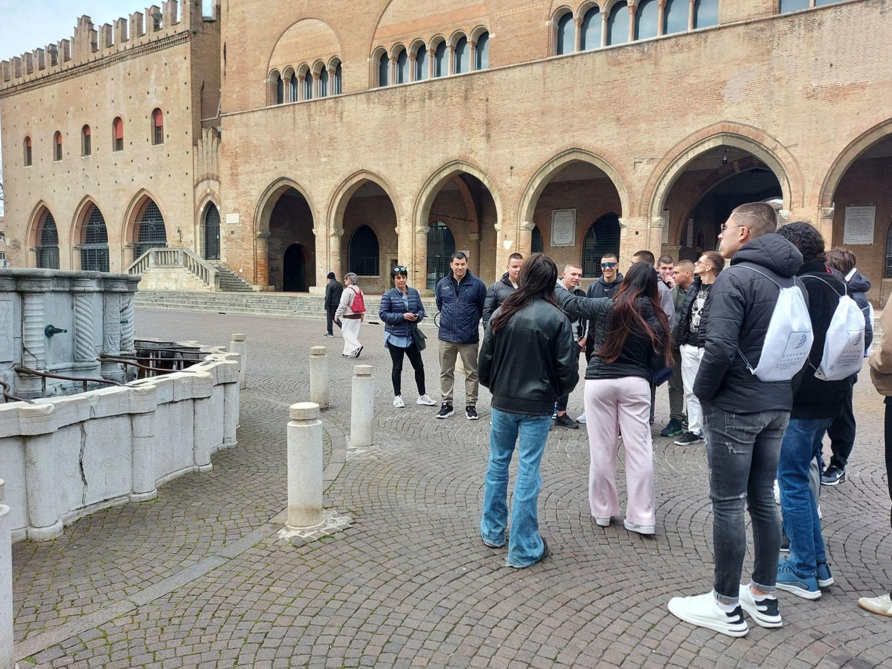
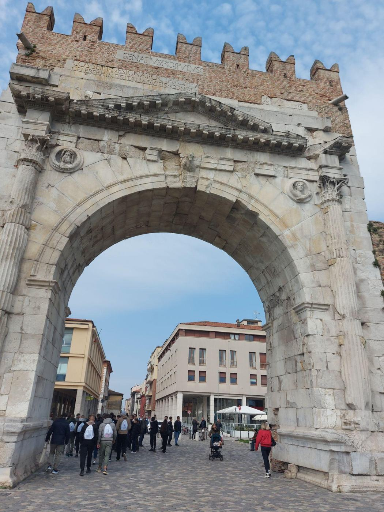
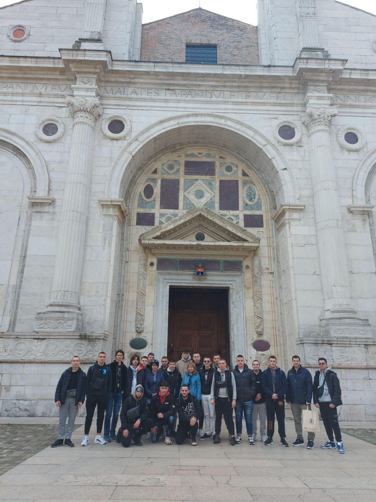

Ден 1
Среща със SISTEMA TURISMO и разходка из Римини
Учениците се срещнаха със служителите на SISTEMA TURISMO, които ги запознаха с двуседмичната програма и организацията на практическото обучение.
След това разгледаха центъра на Римини: Арката на Август, Храма на Малатеста и Palazzo dell’Arengo.


